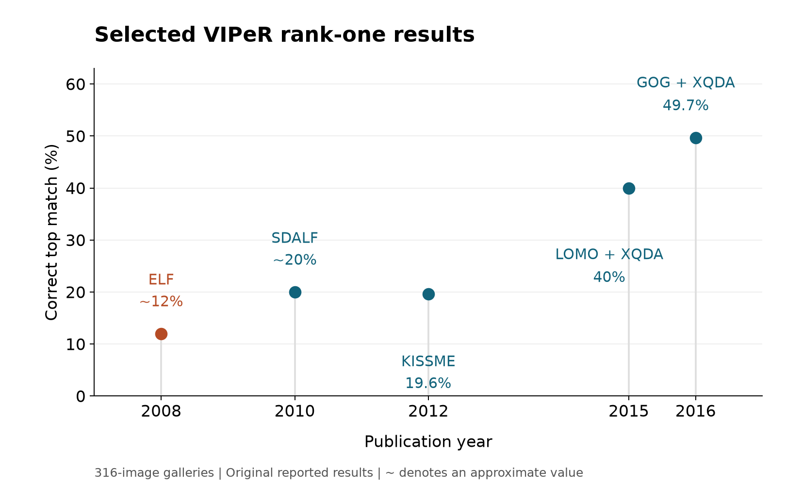

Reflections on 20 Years of Person Re-ID
Measuring the problem, watching the field grow, and reconsidering the purpose of the work.
In 2006, I read Gheissari and colleagues' paper on recognizing people across cameras. The accuracy looked impressive, but the evaluation used just 44 people, seen largely from the front.1 That was a much easier problem than the one I recognized from my undergraduate work.
I had been working on crowd counting: estimating how many people were in a scene, perhaps 50 or 100 of them moving through it, often seen from an awkward camera angle. People faced different directions, overlapped, and appeared at different scales. A collection of mostly frontal images did not represent that variety.
The issue was not whether a recognition method could work in the setting that paper studied. It was what the results told us about finding someone from an arbitrary camera angle, with different lighting, a different pose, and hundreds of plausible matches. How could we make progress on the real problem without measuring it properly, even if a realistic test seemed impossibly difficult?
That question led me to start collecting the Viewpoint Invariant Pedestrian Recognition dataset, VIPeR. The first paper appeared in 2007, but the work began in 2006. Twenty years later, the benchmark has been cited thousands of times and helped researchers develop methods well beyond anything we could do then. It also made surveillance research a promising career path for me. I had an early foothold in a growing field, a dataset others were adopting, and a clear supply of difficult problems to work on. Continuing would have made sense. I eventually chose a different direction.
The appearance problem between cameras
Multi-camera surveillance systems were becoming an active research area. Tracking within one camera was already difficult, but expanding coverage introduced another question: when a person appeared in a second camera, was it someone the system had seen before?
Overlapping fields of view could provide geometric constraints. Nearby cameras could provide timing constraints: someone who left one view might enter another a few seconds later. Those cues were useful, but could become weak or unavailable when cameras were farther apart, their views did not overlap, or the task was to search old footage without knowing when the person would appear.
Appearance was another source of evidence, and it was the one a human would naturally use. A person looking through video could compare clothing, shape, texture, and what someone was carrying. We needed a model that could make those comparisons despite changes in viewpoint and illumination. Simple color histograms were common, but they lost spatial information and could confuse people in similar clothing. Templates preserved layout but changed dramatically with pose. Existing models offered pieces of a solution; we lacked a reliable way to compare them on the full range of variation.3
My earlier crowd-counting work had exposed me to people from all angles and camera orientations. A benchmark for recognition needed to include that variation and enough different identities to make matching meaningful. High accuracy on a small, easy evaluation could not tell us which appearance models would work in a camera network.
Building VIPeR
My adviser had purchased two cameras and made a point of telling us they were three-CCD cameras, with separate sensors for red, green, and blue. It is easy to take good color video for granted now that we all carry cameras in our phones. Back then, the camera hardware and its low-level details were a noticeable part of the experiment, especially when so much of an appearance model depended on color.
We ran two cameras at the same time and hired an undergraduate to help capture footage. I built an annotation tool to draw bounding boxes around people and establish correspondences between the views. The tedious part was finding the same person manually in both recordings. That was precisely the task we wanted the technology to help with.
The final dataset contained two images of each of 632 identities: 1,264 images in total, each normalized to 48 pixels wide by 128 pixels tall. Most pairs differed in viewpoint by at least 90 degrees. The range of identities and the variation between the paired views were what made it useful.2

The evaluation protocol was another contribution of the PETS paper. Ranking was not new; the 2006 paper that prompted this work also reported ranked matches. Other work treated recognition as a binary same-person/different-person decision and reported ROC curves. We argued for evaluating the actual search task: given a probe image and a gallery of candidates, where does the correct person appear? A low false-positive rate on individual pairs does not directly tell you whether the right match will be near the top of a large gallery.
We used the cumulative matching characteristic, or CMC: how often does the correct person appear within the first k results? We did not invent CMC, but making ranking and gallery size explicit was an important part of the evaluation we proposed. It connected appearance matching to the task of helping an operator find someone, rather than reducing the problem to classifying isolated pairs. We also showed how to relate the curve to simplified tracking and reacquisition scenarios.2
To compare methods consistently, we prescribed 5x2 cross-validation: five randomized two-fold rounds, with randomized image order and mirroring, and averaging both gallery/probe directions. This let us study the appearance model separately from the geometric and timing assumptions of a complete tracking system.
Too difficult to publish?
Early versions were rejected from CVPR and ICCV before the work found a home at the PETS workshop in 2007. My recollection is that reviewers cited the low accuracy as one of the main flaws: they did not believe the method worked. From my perspective, that difficulty was evidence that we had finally included important parts of the problem. We needed to measure the gap before we could close it.
The simple baseline models in the 2007 PETS paper began in the low single digits at rank one. Our Ensemble of Localized Features, published at ECCV in 2008, reached about 12 percent. ELF used AdaBoost to select useful local color and texture features and combine their comparisons into a learned similarity function.3 It was progress, but clearly left most of the problem unsolved.
Ranks beyond the first mattered because we envisioned a system assisting a human operator. The 2008 paper reported that ELF placed the correct match within the first 31 results of a 316-image gallery about 70 percent of the time. The point was not simply to report a larger accuracy number. Sorting the gallery could reduce the work of finding the right person while leaving the final decision to an operator.
We quantified that idea with an expected-search-time model. Assuming an operator could review one image per second without making mistakes, the expected search took 158 seconds with an unsorted gallery and 28.9 seconds with ELF: an 81.7 percent reduction. These were modeled search times, not timings from a user study, but they made the intended benefit explicit.3
What changed as the field grew
VIPeR gave researchers a shared test of appearance matching across viewpoints. A few influential methods show how the field progressed from designing better features to learning how to compare them.
In 2010, Farenzena and colleagues' Symmetry-Driven Accumulation of Local Features, or SDALF, organized color and texture around body regions and their symmetry. Weighted color histograms, stable color regions, and distinctive repeated patches retained more of a person's visual structure while allowing changes in pose and viewpoint. The paper reported roughly 20 percent rank-one accuracy on VIPeR, compared with about 12 percent for ELF.4
Köstinger and colleagues' 2012 Keep It Simple and Straightforward MEtric, or KISSME, made metric learning computationally simple. Given pairs labeled as the same or different people, it modeled their feature differences and derived a distance metric from a likelihood-ratio test. Some variation is normal between two views of one person; other variation distinguishes identities. KISSME supplied an efficient, reusable way to learn that distinction. Its VIPeR result was 19.6 percent at rank one, averaged over 100 runs.5
Liao and colleagues' 2015 work paired Local Maximal Occurrence features with Cross-view Quadratic Discriminant Analysis. LOMO pooled local color and texture occurrences across horizontal positions, allowing an informative detail to move as the viewpoint changed. Illumination handling made the representation more stable; XQDA learned a discriminative subspace and comparison metric together. The combination reached 40 percent rank one on VIPeR and became a strong baseline for later work.6
Matsukawa and colleagues' 2016 Gaussian of Gaussian descriptor modeled local appearance distributions using both means and covariances, then described how those distributions varied across a region. Combined with XQDA and multiple color spaces, it reached about 50 percent rank one on VIPeR.7 Rich hand-crafted representations still competed well on a dataset with only 316 training identities per fold.
Meanwhile, DeepReID and subsequent neural methods learned representations and matching jointly.8 Larger datasets made that approach increasingly effective. VIPeR continued to appear in tables, often as a transfer target, but no longer provided enough training data to represent the field's main ambitions. The 2016 survey Person Re-Identification: Past, Present and Future offers a useful account of this transition.9



The citation histories reflect that change. The PETS paper's annual citations peaked at 179 in 2017; the ECCV paper's peaked at 213 in 2018. Google Scholar now lists 1,405 and 2,016 citations respectively. New papers still cite them, but the pace has slowed as the field has moved to larger and more varied benchmarks.
Outgrowing the benchmark
Market-1501 made the limitations of the older benchmarks explicit: small identity sets, few cameras, hand-drawn boxes, and too little variation to represent deployment. It introduced more than 32,000 detector-produced boxes for 1,501 identities across as many as six cameras.10 MARS extended the task to video tracklets.11 Later datasets added occlusion, infrared imagery, larger galleries, domain shift, and people who were absent from the gallery altogether.
VIPeR was superseded, which is a good outcome for an early benchmark. It helped establish a measurable problem and then revealed what the next evaluations needed to include. Its small, carefully cropped images remain useful for studying a particular matching task, but high performance there cannot establish how a system behaves in a city, with detection errors, changing clothes, and an unknown population.
A promising career, and a question I could not set aside
I started at UC Santa Cruz about a week after September 11, 2001. By the time I began learning computer vision in 2004, security was widely treated as a reason to accept less privacy. Surveillance research attracted funding and energy, and tracking people across cameras seemed like an important technical problem to help solve.
By the time VIPeR was gaining attention, I had several reasons to stay in the area. I understood the problem, had built a benchmark the community wanted, and could see many avenues for further research. The technology had growing commercial demand as well as academic interest. Doubling down would have been a straightforward way to build on the work I had already done.
But a few years into the Ph.D., I began questioning the application. Before advancing to candidacy in 2008, I changed my proposed dissertation title to Privacy Preserving Pedestrian Recognition. I was trying to find a way to continue the research while addressing the concern that it would make people easier to track.
The concern became more concrete through my adviser, Hai Tao, who was building Vion, a company selling surveillance software. My understanding at the time was that its biggest customer was the Chinese government. I could see a path from our work on recognizing people across cameras to systems for tracking people across cities. I did not want that to be the purpose of my research.
Vion's later public materials give some context for that concern. The company describes applications in electronic policing, public safety, transportation, and smart-city management. A 2024 article credits Hai and me with VIPeR and describes re-identification as reconstructing movement trajectories. It also presents avoiding face, iris, and gait recognition as a privacy benefit.1314 Those materials do not establish where this particular dataset was used. They do illustrate the distinction I was struggling with: avoiding a particular biometric does not answer whether someone should be tracked.
I could propose technical safeguards, but the decision to preserve privacy depended on policy. Who could search the camera network? Whose movements could be reconstructed? For what purpose, with what oversight, and with what possibility of refusal? Better features or a formal privacy guarantee could answer only part of that. This became one of several reasons I never finished the Ph.D., and probably one of the larger ones.
The current debate about Flock cameras makes that question feel familiar. Reading a license plate is, at its core, optical character recognition: recovering an explicit identifier that is already printed on a vehicle. It has its own difficult imaging conditions, and Flock also searches vehicle characteristics beyond the plate.15 But I do not walk around the city with a license plate on. Person re-identification tries to make someone searchable across cameras using appearance alone. In that sense it could provide a license-plate-like tracking capability for people who carry no such identifier, with the potential to be even more intrusive.
Last month, in September 2026, my own neighborhood, Ladera in Portola Valley, voted to end its Flock camera contract because of privacy concerns. That brought the question out of research papers and into the place where I live. The decision was about whether we wanted this form of surveillance in our community, not whether the cameras could read plates more accurately.
Looking back, I am proud that VIPeR helped people measure a difficult problem instead of avoiding it. That does not resolve my doubts about what we made easier to do. The question that got me started was whether we could recognize people across cameras. The question I could not set aside was what would happen when we could. The vote in Ladera reminded me that this is not something researchers get to decide for the people who live with the cameras.
VIPeR dataset download, documentation, and citation guidelines
Sources and notes
- N. Gheissari et al., Person Reidentification Using Spatiotemporal Appearance, CVPR 2006.
- D. Gray, S. Brennan, and H. Tao, Evaluating Appearance Models for Recognition, Reacquisition, and Tracking, PETS 2007.
- D. Gray and H. Tao, Viewpoint Invariant Pedestrian Recognition with an Ensemble of Localized Features, ECCV 2008.
- M. Farenzena et al., Person Re-Identification by Symmetry-Driven Accumulation of Local Features, CVPR 2010.
- M. Köstinger et al., Large Scale Metric Learning from Equivalence Constraints, CVPR 2012, Table 2(a); authors' code and documentation.
- S. Liao et al., Person Re-Identification by Local Maximal Occurrence Representation and Metric Learning, CVPR 2015; authors' results.
- T. Matsukawa et al., Hierarchical Gaussian Descriptor for Person Re-Identification, CVPR 2016.
- W. Li et al., DeepReID: Deep Filter Pairing Neural Network for Person Re-identification, CVPR 2014.
- L. Zheng, Y. Yang, and A. G. Hauptmann, Person Re-Identification: Past, Present and Future, 2016. See also Karanam et al.'s systematic benchmark and Ye et al.'s deep-learning survey.
- L. Zheng et al., Scalable Person Re-Identification: A Benchmark, ICCV 2015.
- L. Zheng et al., MARS: A Video Benchmark for Large-Scale Person Re-Identification, ECCV 2016.
- Google Scholar article histories for PETS 2007 and ECCV 2008, observed October 12, 2026. The plotted range is 2010–2026, the common range displayed in the two histories.
- Vion Technology, article on its re-identification patents and history, 2024 (Chinese).
- Vion Technology, company history; Beijing Security and Protection Industry Association, company profile (Chinese).
- Flock Safety, Vehicle Recognition Software for Investigation-grade LPR, 2026; describes plate reading and searches by vehicle appearance.